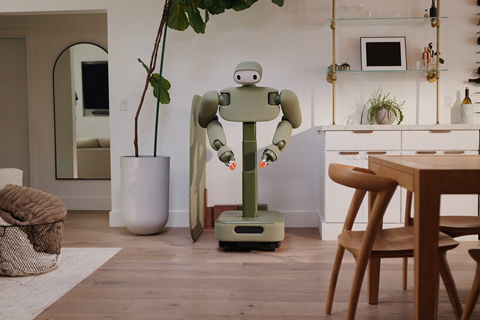
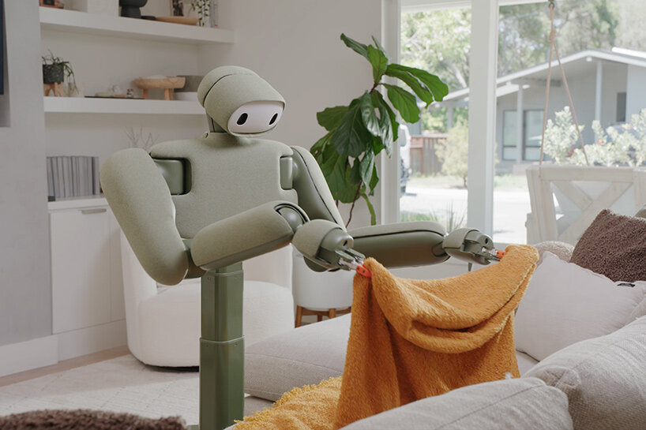
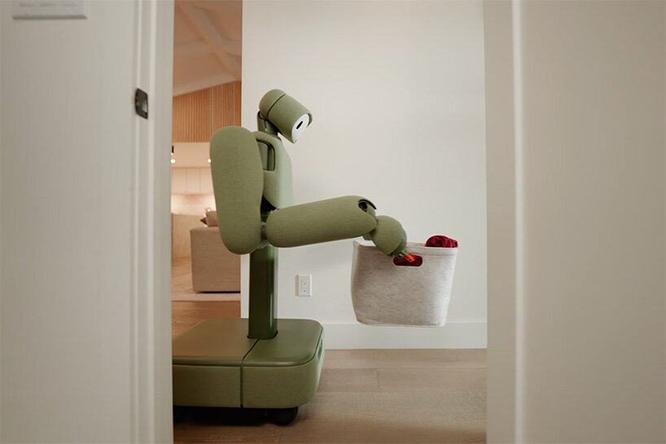
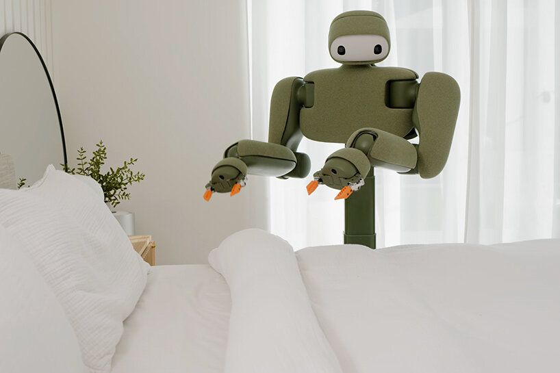
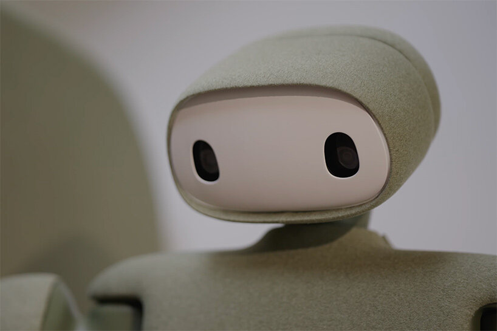
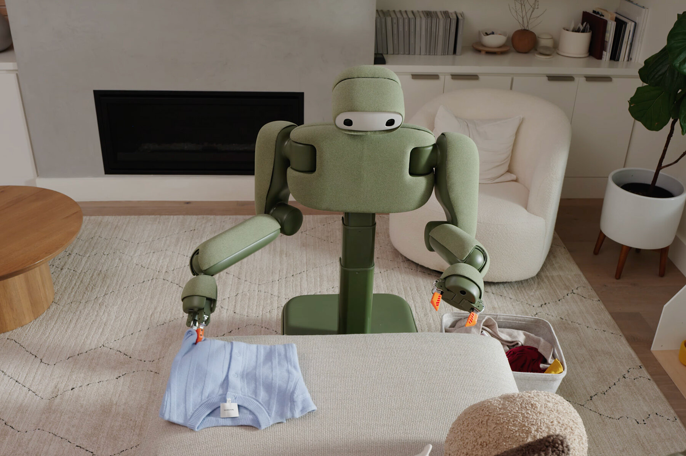
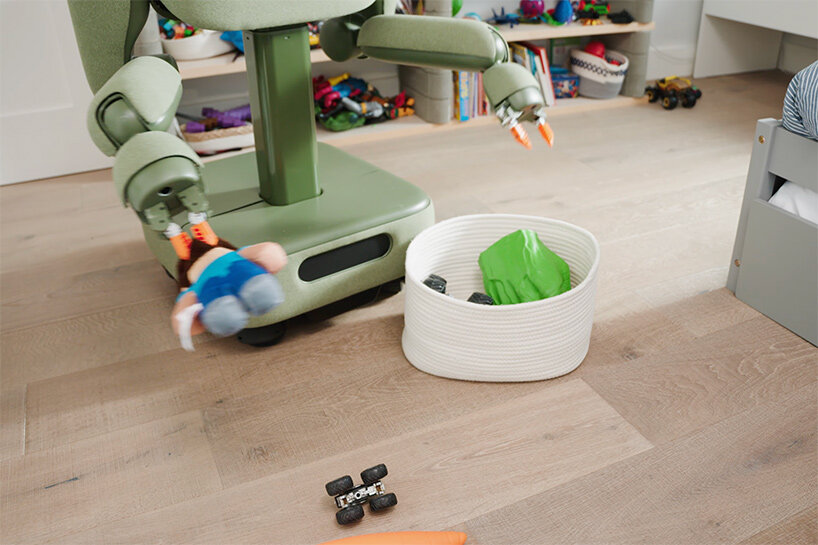
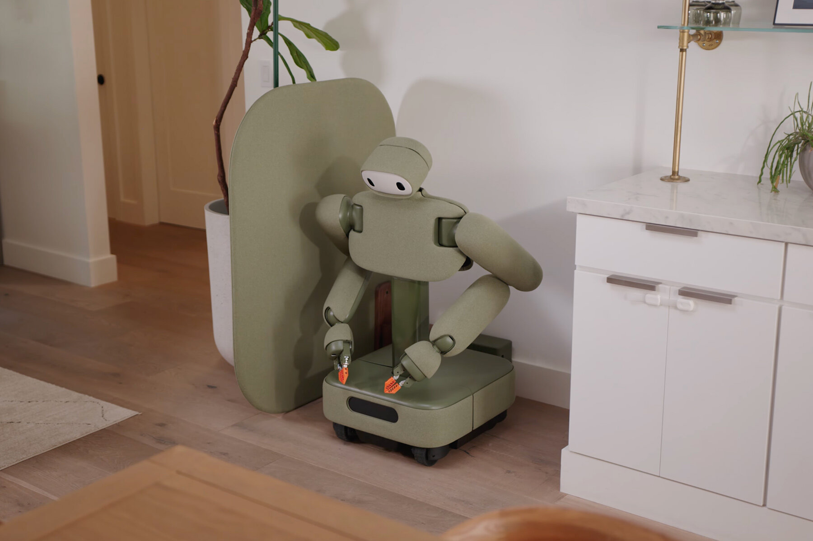

شركة أمريكية ناشئة تطوّر روبوتات منزلية ذكية تعتمد على الرؤية الحاسوبية والتخطيط بالذكاء الاصطناعي، بهدف أتمتة المهام اليومية داخل المنزل — من طي الملابس إلى ترتيب الغرف.
Weave Robotics شركة تأسست عام 2024 في San Francisco، وتعمل على بناء جيل جديد من الروبوتات المنزلية القادرة على تنفيذ مهام حقيقية — لا عروضاً تجريبية فقط.
تتميّز الشركة بتركيزها على حلّ مشكلة محددة: أتمتة الأعمال المنزلية الروتينية عبر منصة روبوتية متكاملة (Full Stack Robotics)، بدءاً من Isaac 0 لطي الملابس وجمع البيانات، وصولاً إلى Isaac 1 — روبوت متحرك بعجلات للمساعدة الشاملة في المنزل.
حصلت على دعم Y Combinator S24 وتمويلاً مبكراً يقدّر بحوالي 500,000 دولار. نموذجها التجاري يجمع بين الشراء الكامل والاشتراك الشهري، مع تسليم أولي متوقع في خريف 2026. الشركة تتبنّى تصميمًا بعجلات بدلاً من الأرجل — قرار استراتيجي يقلّل التكلفة ويرفع الأمان والاستقرار في بيئة منزلية.
شركة واعدة في مرحلة مبكرة، بفريق قوي وتمويل من أبرز مسرّعات العمل، لكنها تواجه منافسة شرسة من لاعبين ممولين بمليارات الدولارات.
تأسست Weave Robotics في عام 2024 بهدف جعل الروبوتات المنزلية عملية وقابلة للاستخدام اليومي — لا مجرد تجارب تقنية. تركّز الشركة على دمج الرؤية الحاسوبية، التخطيط الذكي، والتحكم الروبوتي في منصة واحدة متكاملة.
بدلاً من بناء روبوتات عامة متعددة الاستخدامات، تتبنّى Weave نهجاً تدريجياً: تبدأ بـ Isaac 0 لحلّ مهمة محددة (طي الملابس)، ثم توسّع القدرات عبر Isaac 1 ليشمل مجموعة أوسع من المهام المنزلية.
هذا النهج يسمح بجمع بيانات حقيقية عن تفاعل البشر مع الملابس والبيئة المنزلية، ما يعزّز قدرات الذكاء الاصطناعي على المدى الطويل.
Co-Founder & CTO
خريج Carnegie Mellon، عمل سابقاً في Apple كمدير أبحاث ML Robotics ومهندس iPhone — يقود البنية التقنية والروبوتات في Weave Robotics.
Co-Founder & CEO
خريج Carnegie Mellon، عمل سابقاً Lead AI PM في Apple (Siri وApple Intelligence) — يقود المنتج والاستراتيجية التجارية لـ Weave Robotics.
يقع المقر في قلب وادي Silicon Valley — أحد أبرز مراكز الابتكار التقني في العالم. هذا الموقع يوفّر وصولاً مباشراً لمواهب الذكاء الاصطناعي والروبوتات، بالإضافة إلى شبكة مستثمرين ومسرّعات أعمال رائدة مثل Y Combinator.
انطلاق Weave Robotics في San Francisco بهدف أتمتة المهام المنزلية.
الانضمام إلى دفعة Y Combinator الصيفية وحصول على تمويل Pre-Seed.
إطلاق Isaac 0 وIsaac 1 مع برنامج حجز مسبق وتسليم أولي في خريف 2026.
آلة مخصصة لطي الملابس وتجميع البيانات حول التعامل مع الملابس. تمثّل نقطة الدخول الأولى للشركة — حلّ مركّز لمهمة واحدة يسمح بجمع بيانات تدريبية قيّمة واختبار السوق قبل التوسع.
روبوت منزلي متحرك بعجلات، مخصص للمساعدة في الأعمال المنزلية: ترتيب الغرف، التقاط الملابس، جمع الألعاب، نقل الأغراض، وطي الملابس. يمثّل المنتج الرئيسي والرؤية الكاملة للشركة.
حلّ متخصص يجمع بيانات ويثبت القدرة التقنية على مهمة محددة.
توسيع القدرات لتشمل مهام منزلية متعددة عبر روبوت متحرك.
بدء التسليم في كاليفورنيا ثم التوسع تدريجياً في أمريكا.
فيديو تعريفي — Isaac 1 من Weave Robotics
لا يسير على رجلين — يركّز على الوصول للأغراض والتنقل داخل الغرفة بقاعدة متحركة عملية.
يرتفع من 3 أقدام إلى 5 أقدام و9 بوصات حسب المهمة — سرير، طاولة، سلة ملابس أو خزانة.
مساحة أرضية 20.5 × 22 بوصة — أقرب لجهاز منزلي من روبوت بشري كامل الحجم.
80 بوصة عمودياً و38 بوصة أفقياً — يغطي معظم أسطح المنزل دون تقليد حركة الإنسان.
قشرة قماشية قابلة للإزالة بألوان Sage وGray وSlate Blue وTerracotta وVesper — يبدو كقطعة أثاث.
يلتقط الملابس، يفرزها، يطويها، ويرتبها — مع التركيز على الغسيل كحالة الاستخدام الرئيسية.
يعمل باستقلالية في المهام اليومية، مع إمكانية التدخل عبر Teleoperation عند الحالات المعقدة.
تطبيق للجدولة والاستدعاء — بطارية حتى 8 ساعات وشحن خلال ساعتين.








الصور والمحتوى: designboom — Weave Robotics Isaac 1 · images via Weave Robotics
رؤية حاسوبية متقدمة لفهم البيئة المنزلية والأجسام والملابس بدقة.
تخطيط ذكي لتسلسل المهام المنزلية واتخاذ قرارات في الوقت الفعلي.
تحكم روبوتي دقيق في الحركة والتعامل مع الأغراض اليومية.
تشغيل عن بُعد عند الحاجة لتدريب النماذج ومعالجة الحالات المعقدة.
منصة متكاملة تجمع البرمجيات والأجهزة والذكاء الاصطناعي في نظام واحد — من جمع البيانات إلى تنفيذ المهام بشكل مستقل.
قرار تصميمي استراتيجي يميّز Weave عن معظم المنافسين
أنظمة العجلات أبسط وأرخص في التصنيع والصيانة مقارنة بأرجل روبوتية معقدة.
حركة مستقرة ومتوقعة تقلّل مخاطر السقوط أو التصادم داخل المنزل.
توازن أفضل على الأسطح المستوية التي تمثّل 95% من بيئة المنزل.
كفاءة أعلى في الطاقة تمكّن من عمل أطول دون شحن متكرر.
البيئة المنزلية مسطحة بمعظمها — العجلات الخيار العملي الأمثل بينما الأرجل حلّ مبالغ فيه تقنياً لمهام لا تتطلب تسلّقاً.
ملكية كاملة للروبوت مع دعم فني وتحديثات برمجية.
وصول للروبوت بدون التزام شراء كامل — نموذج Hardware-as-a-Service.
حجز مسبق لضمان مكان في قائمة التسليم الأولى.
مقارنة استراتيجية بين Weave Robotics واللاعبين الرئيسيين
| الشركة | التمويل | التركيز | الحركة | المرحلة | السعر التقريبي |
|---|---|---|---|---|---|
| Weave Robotics | ~$500K | منزلي · طي ملابس | عجلات | Pre-Seed | $7,999 / $449/mo |
| Tesla Optimus | تمويل ذاتي (Tesla) | عام · صناعي | أرجل | تطوير | غير معلن |
| Figure AI | $675M+ | عام · مصنع | أرجل | Series B | غير معلن |
| 1X Technologies | $125M+ | أمن · منزلي | أرجل | Series B | اشتراك |
| Unitree | ربحية جزئية | عام · بحث | أرجل | ناضجة | $16K–$90K |
| LimX Dynamics | $200M+ | عام · صناعي | أرجل | Series A | غير معلن |
نهج Full Stack Robotics مع تركيز على بيانات الملابس — تميّز تقني حقيقي.
الطلب موجود لكن تبنّي الروبوتات المنزلية لا يزال في مرحلة مبكرة.
تمويل Pre-Seed محدود — يحتاج جولة Series A لمواكبة المنافسة.
مخاطرة عالية — مرحلة مبكرة، منافسة قوية، منتج غير مُسلّم بعد.
سوق واسع ونموذج اشتراك جذاب — إذا نجح التسليم الأولي.
Weave Robotics شركة واعدة بتقنية متميزة ونهج عملي، لكنها في مرحلة High Risk / High Reward. نجاحها يعتمد على التسليم في الموعد، إثبات الموثوقية في المنزل، وجولة تمويلية تالية. مناسبة للمتابعة وليس للاستثمار الكبير في هذه المرحلة.
weave.ai
yc.com/companies/weave
sacra.co/c/weave-robotics
Isaac 1 Coverage
Isaac 1 Video
techradar.com
therobotreport.com
@weaverobotics